Drop a song onto the window and Lyric Player finds its lyrics, its cover and, when the album has one, its moving cover. The background takes its colours from the cover and moves with the bass. On a PC it can also show the lyrics for whatever Spotify, Apple Music or your browser is playing.
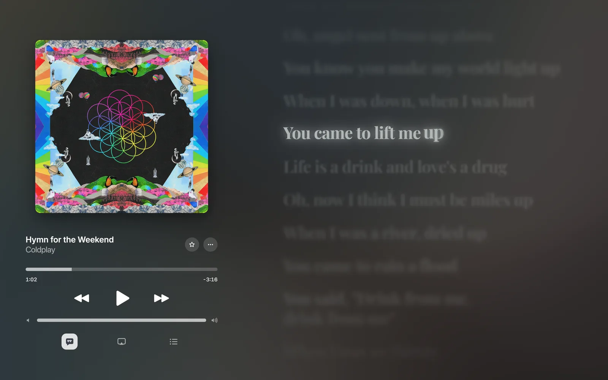
The player. The line being sung is bright, the rest are dimmed and blurred, and the background takes its colours from the cover.
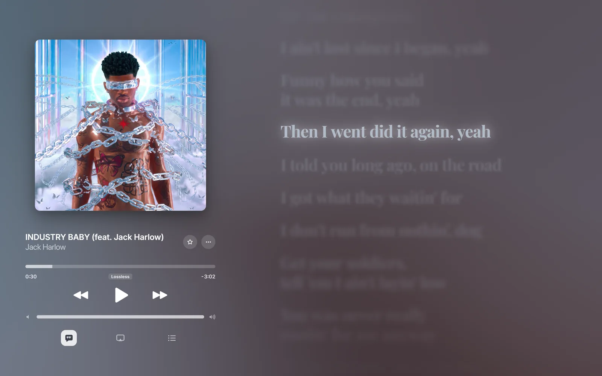
Every song gets its own colours.
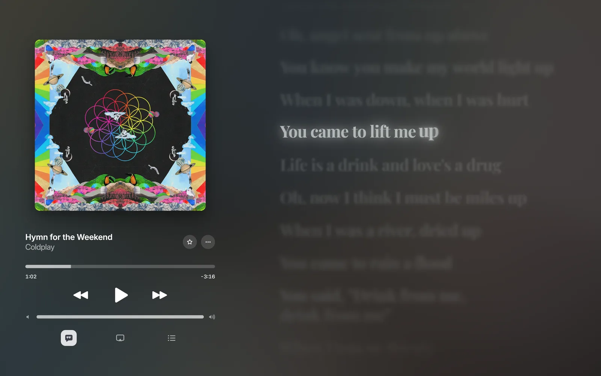
Fonts, colours and glow are yours to change.
Topics
Article
Getting started
Install the app, play a song and load its lyrics.
Install
Windows: download the installer or the portable version from the download page. The installer adds a Start menu entry; the portable version runs from wherever you put it.
In a browser: open files.ruytha.dev. Everything except the desktop extras (following other apps, floating lyrics, the tray, Discord) works there.
Mac: the Mac download appears on the download page once it's ready.
The app updates itself. New versions download in the background and are used from the next start (Settings, About).
Open this documentation from the app with ••• › Lyric Player Help, the Help link at the foot of Settings, or F1.
Play a song
Drop an audio file (MP3, M4A, FLAC, OGG, WAV and more) onto the window, or use ••• › Open › Load New Song…. Lyric Player reads the title, artist and cover from the file and looks for lyrics on its own.
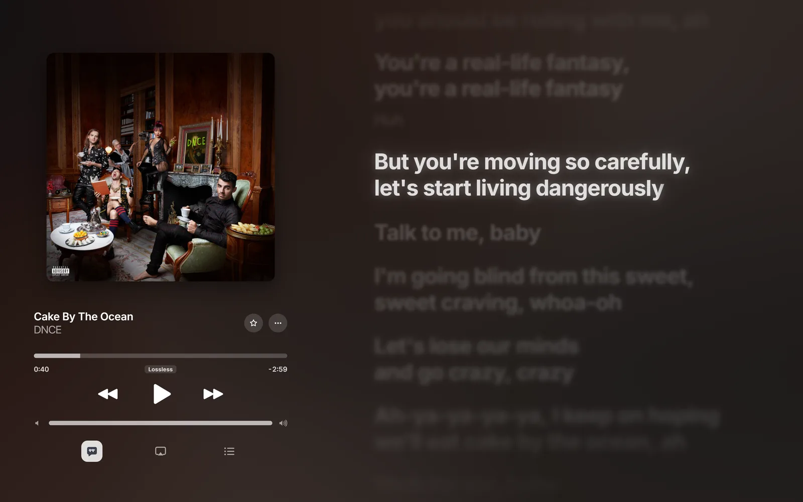
The player. The line being sung is bright; the rest are dimmed and blurred.
Click any lyric line to jump to it. The buttons under the controls are, from left: lyrics on or off, AirPlay or Cast (when your device offers it), and the library. Settings and Full Screen are in the ••• menu, or press Ctrl + , and F.
Load lyrics yourself
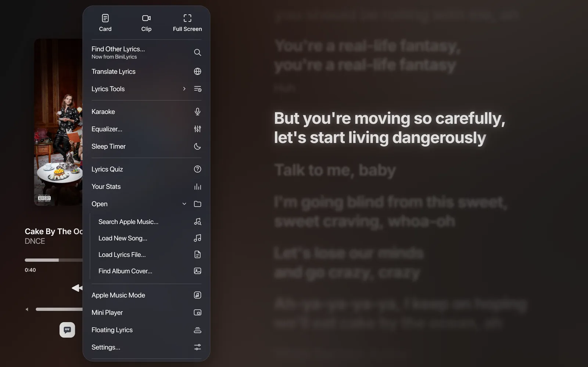
Everything that loads songs, lyrics and covers is under ••• › Open.
Lyric Player reads TTML files, the format Apple Music uses for word-synced lyrics. Drop a .ttml file on the window or use ••• › Open › Load Lyrics File…. The lyrics are saved with the song, so they're there next time.
Tip
Try ••• › Demo to see a song with duets, background vocals and translations.
See also
Reference
Keyboard shortcuts
Every key the player listens for, plus the global shortcuts on desktop.
In the player
Key
Action
Space
Play or pause
←→
Back or forward 5 seconds
↑↓
Volume up or down
NP
Next or previous song
/
Find lyrics
L
Show or hide the lyrics
[]
Lyrics 50 ms earlier or later
E
Edit lyric timing
Q
Up Next
C
Find album cover
M
Apple Music Mode on or off
S or Ctrl,
Settings
F or F11
Full screen
I
Mini player (desktop)
K
Floating lyrics (desktop)
F1
This documentation
Global shortcuts (desktop)
These work from any app, even when Lyric Player is in the tray. Turn them on or off in Settings › App › Global shortcuts. On a Mac, use ⌘ instead of Ctrl.
Keys
Action
CtrlAltSpace
Play or pause
CtrlAlt→
Next song
CtrlAlt←
Previous song
CtrlAltL
Floating lyrics
CtrlAltP
Show or hide the window
Article
Finding lyrics
Where lyrics come from, how the best match is picked, and how to choose different ones.
Automatic lyrics
When a song has no lyrics, Lyric Player searches every source and uses the best match: the right title and artist, about the same length, and word-synced lyrics before line-synced ones. Turn this off in Settings › Lyrics › Find lyrics automatically.
The sources, best first:
Apple Music, from your own subscription when you sign in (desktop app).
AMLL TTML DB, a community library of word-synced lyrics.
BiniLyrics, NetEase Cloud Music and QQ Music.
LRCLIB, line-synced lyrics.
If the best match fails to load, the next one is tried.
Choose different lyrics
Press / or use ••• › Find Other Lyrics…. Each result says whether it is word-synced or line-synced, where it comes from and how long the song is, so you can pick the version that matches yours.
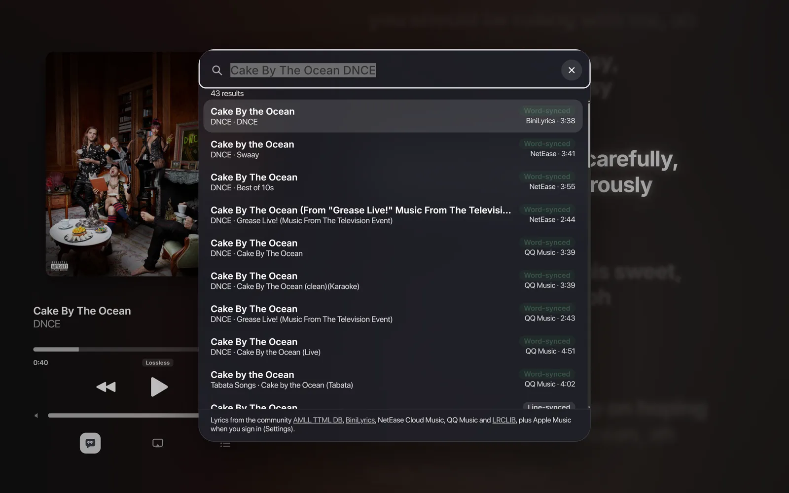
Results for one song from several sources. The length helps you avoid live and remixed versions.
Apple Music lyrics
In the desktop app, open Settings › Apple Music and sign in on Apple's own page. Lyric Player never sees your password. Lyrics then come from your account's country, the same lyrics the Apple Music app shows.
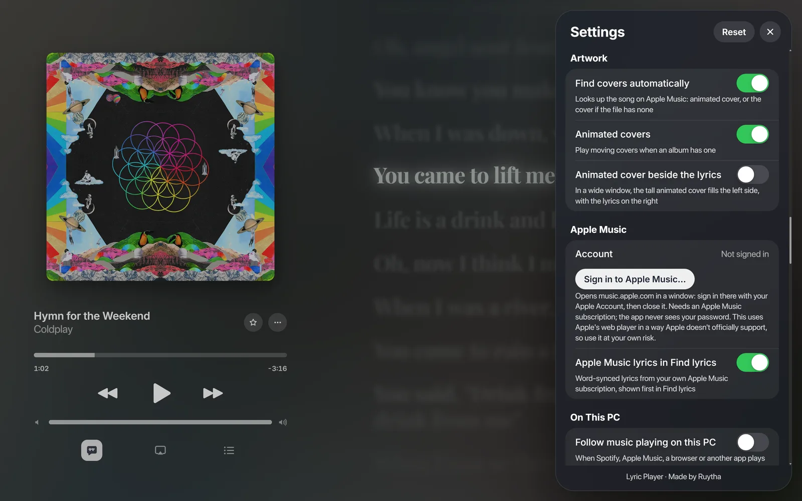
Sign in under Settings › Apple Music. Apple Music lyrics then come first in Find lyrics.
Note
Apple Music lyrics need an active Apple Music subscription.
Where the lyrics came from
After the last line, the player shows who wrote the song and where the lyrics came from. When the lyrics don't name the songwriters, they're looked up on MusicBrainz (Settings › Lyrics › Find songwriters online).
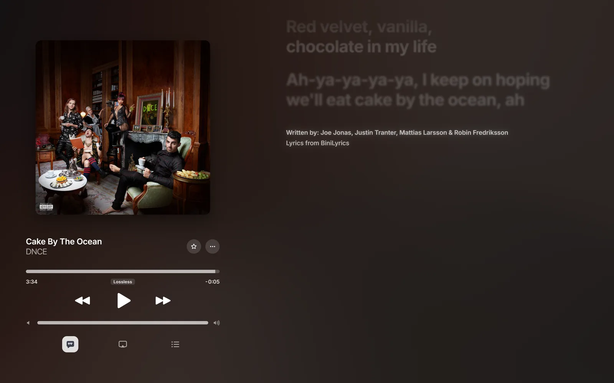
After the last line: the songwriters and where the lyrics came from.
See also
Article
Fixing lyric timing
Shift lyrics that run early or late, fix single lines, or time lyrics yourself.
Shift all lyrics
When every line is a little early or late, press [ or ] to move the lyrics 50 ms at a time, or use the Lyric Offset stepper under ••• › Lyrics Tools. Click the number to reset it.
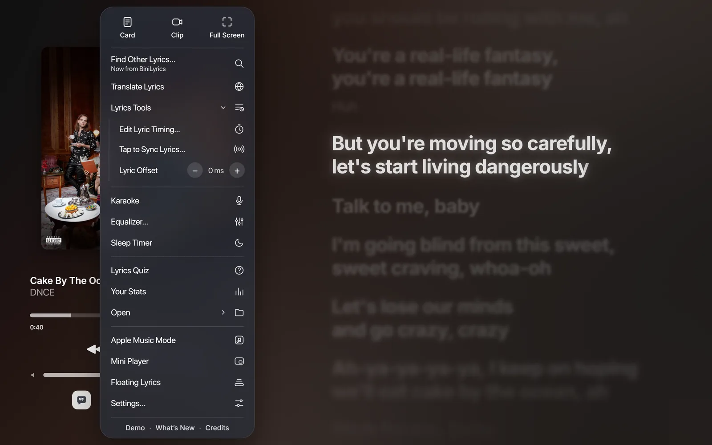
Lyrics Tools holds the timing editor, Tap to Sync and the offset stepper.
Edit single lines
Press E (••• › Lyrics Tools › Edit Lyric Timing…). Play the song and tap T as each selected line starts, or nudge a line by 50 ms with [ and ]. Save keeps the changes with the song; Export .ttml saves a file.
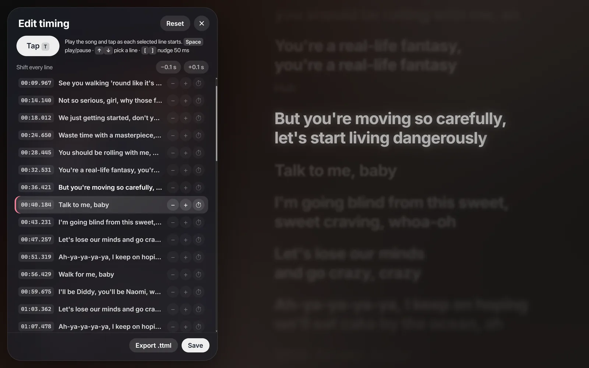
Edit timing lists every line with its start time.
Time lyrics from scratch
For plain lyrics with no timing, use ••• › Lyrics Tools › Tap to Sync Lyrics…: paste the words, play the song and tap (or press Space) as each line starts. The result is a line-synced TTML file you can keep.
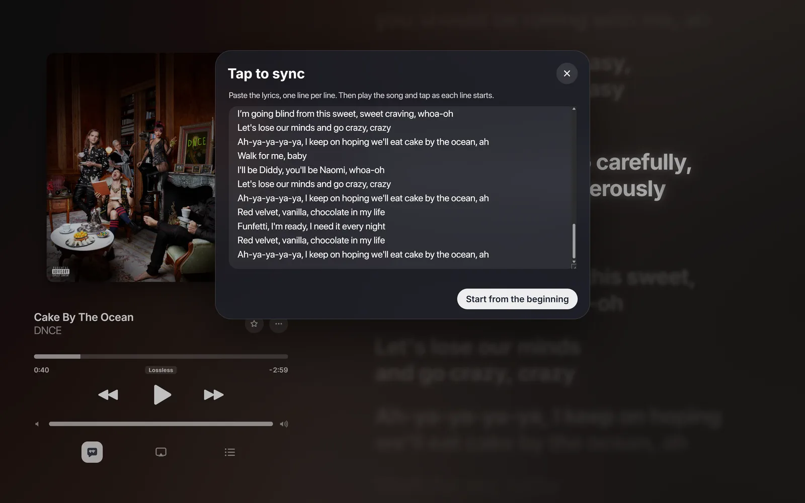
Paste the lyrics, then tap as each line starts.
Lyrics you timed or loaded yourself can be shared with everyone through ••• › Lyrics Tools › Send to AMLL TTML DB…. It saves the file and opens the database's submission form (a GitHub account is needed).
Article
Translation and romanization
Show a translation under each line, translate lyrics that have none, and read Japanese and Korean lyrics in Latin letters.
Translations
When the lyrics include a translation, turn it on with ••• › Show Translation. For lyrics without one, ••• › Translate Lyrics translates them into the language set in Settings › Lyrics › Translate lyrics to, using the translator built into your browser when it has one.
Romanization
Korean and Japanese kana are romanized by the app itself. Lines with kanji or Chinese characters borrow the romanization NetEase or QQ Music has for the same song. Turn it on or off in Settings › Lyrics › Romanization.
A romanized line under every Japanese line.The romanized line lights up along with the Japanese.
Article
Library and queue
Keep songs in the app, add music folders, build playlists and choose what plays next.
Press Q to open the library. It has three tabs:
Up Next: what's playing and what plays after it, with shuffle and repeat.
Songs: every song you've played, newest first. The search box finds songs by title, artist or a line of their lyrics.
Playlists: your own lists of songs.
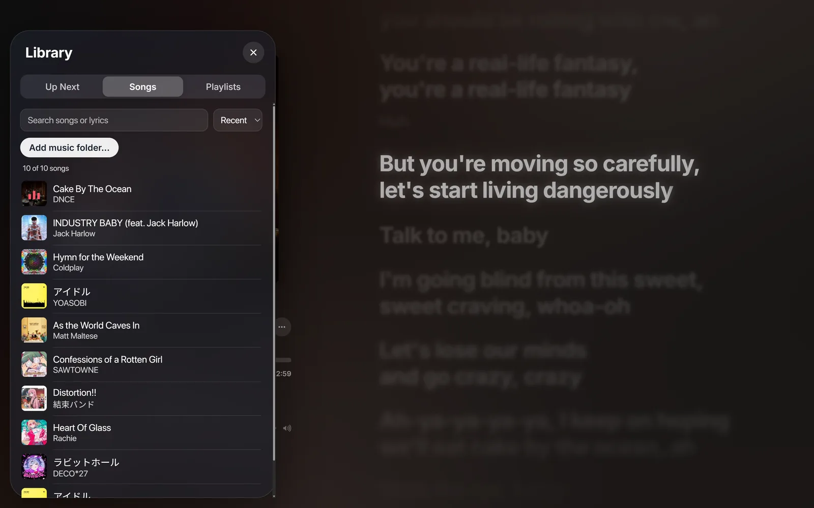
The Songs tab. Search covers lyrics too.
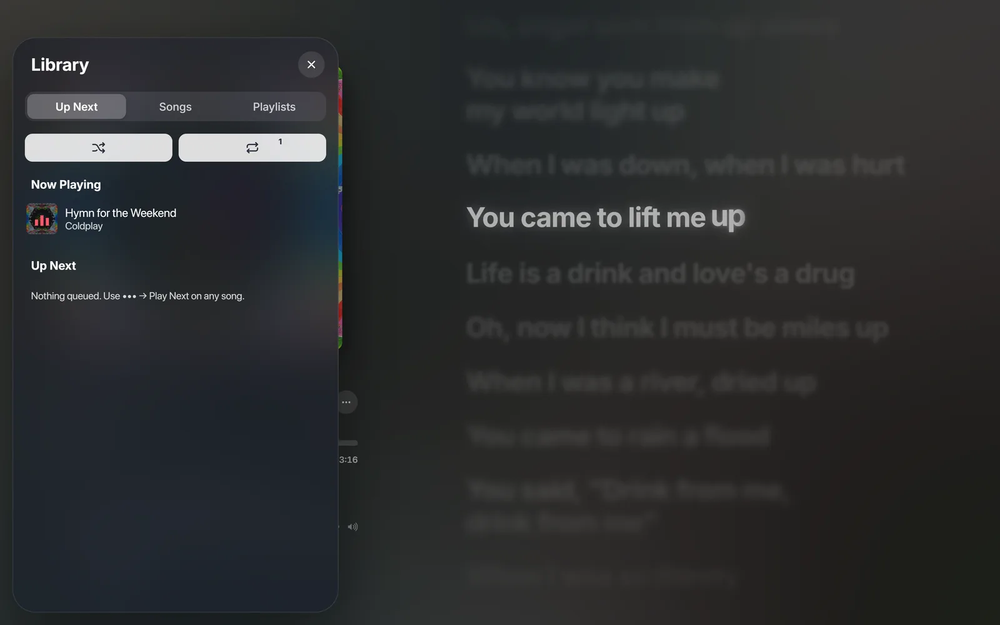
Up Next shows what’s playing, with shuffle and repeat. Add songs with ••• › Play Next on any song.
Music folders (desktop)
Add music folder… adds a folder from your PC. New files are added and deleted ones disappear on their own. A .ttml file next to a song, with the same name, is used as its lyrics.
Note
In a browser the library keeps up to 30 songs inside the browser. Folder songs in the desktop app don't count toward that.
Smart shuffle
With Settings › Playback › Smart shuffle on, shuffle plays songs you haven't heard lately first and keeps the same artist from playing twice in a row.
Article
Following Spotify and Apple Music
Show synced lyrics for music playing in another app on your PC.
When Spotify, Apple Music, a browser or another app plays and Lyric Player doesn't, the desktop app shows that song's title, cover and synced lyrics. It reads what's playing from the system's media controls, the same information as the volume flyout. Turn it on or off in Settings › On This PC.
The play, pause, next and seek buttons control the other app.
A song followed from another app looks the same as your own: cover, colours and synced lyrics.
Note
Lyric Player never records or saves music from Spotify or Apple Music. Lyric clips include sound only for your own song files.
If the lyrics drift
Apps report their position only now and then, and Lyric Player counts on from the last report. If the lyrics are early or late for a particular app, shift them with [ and ]; the offset is remembered for that song.
Article
Searching Apple Music
Find any song in Apple Music, hear a preview, and get its synced lyrics.
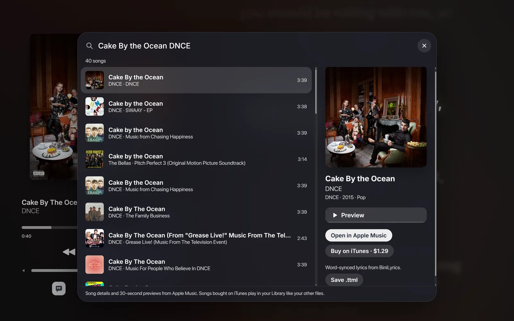
Search Apple Music with a song chosen.
Open ••• › Open › Search Apple Music… and type a song and artist. Pick a result to see its cover (animated when the album has one), album, year and genre.
Preview plays Apple’s 30-second preview. The player pauses while it plays. Press Enter to play or stop the preview of the selected song, and the arrow keys to move through the results.
Open in Apple Music opens the song there, to play it or save it to your Apple Music library.
Buy on iTunes opens the song in the iTunes Store, with its price. Songs you buy there are normal files: add their folder to the Library and they play like your other songs, with Karaoke, AutoMix and lyric clips with sound.
Get Lyrics finds the best synced lyrics for the song. Save .ttml saves them as a file, ready to drop onto the player with the song.
Note
This window doesn’t download songs. Previews play from Apple; nothing is saved but the lyrics file you choose to save.
Article
AutoMix, crossfade and the equalizer
Blend songs together on the beat, shape the sound, and even out the volume.
These settings work on your own song files, in Settings › Playback.
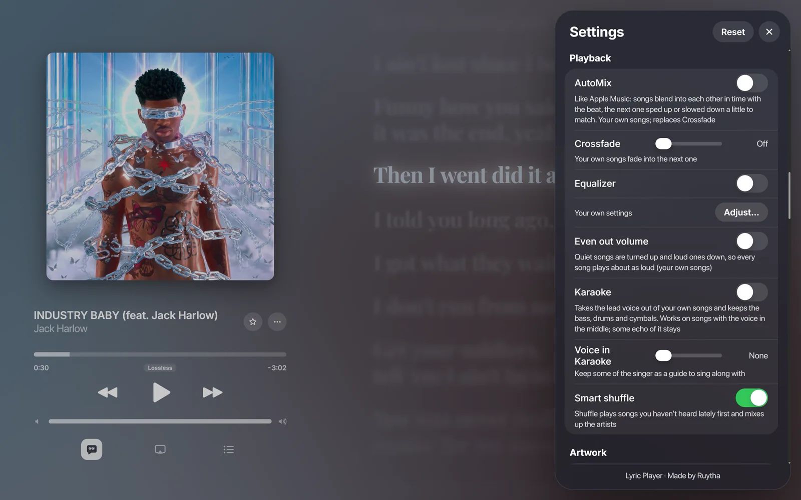
Settings › Playback.
AutoMix
Like Apple Music's AutoMix: the blend starts on the first beat of a bar, the next song comes in on its own first bar, sped up or slowed down a little to match the tempo, the bass swaps halfway through, and its speed eases back to normal afterwards. When a song fades out slowly, the blend starts as the fade begins. With synced lyrics, AutoMix waits for the last sung line to finish, so the next song never plays over the singing. AutoMix replaces Crossfade when both are on.
Crossfade
Fades each song into the next one, over up to 12 seconds.
Equalizer
Ten bands from 32 Hz to 16 kHz, with presets such as Bass Booster, Vocal Booster, Late Night and Rock. Open it from ••• › Equalizer….
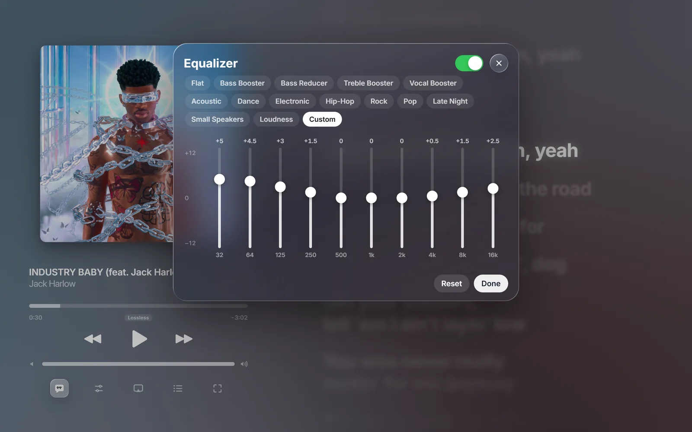
Pick a preset or drag the sliders; your own settings are saved as Custom.
More sound settings
Even out volume: quiet songs are turned up and loud ones down.
Karaoke: takes the lead voice out and keeps the bass, drums and cymbals, in stereo. It works when the voice is in the middle of the mix; some echo of it stays, and on mono songs it can't take the voice out (Lyric Player tells you). Settings › Playback › Voice in Karaoke keeps some of the singer as a guide.
Sleep timer: in the ••• menu. Each tap steps through 15, 30, 45 and 60 minutes and the end of the current song; the music fades out when it stops.
Article
Apple Music Mode and Now Playing
A phone-shaped player like the iPhone's, its Now Playing screen, and animated covers.
Apple Music Mode
Press M or use ••• › Apple Music Mode. The window becomes a portrait player like the iPhone's lyrics view; the controls slide up when you move the pointer and hide again when you stop.
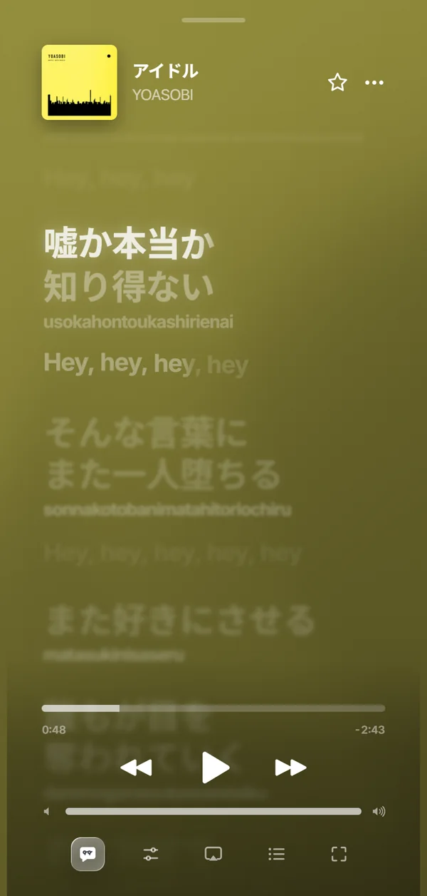
Apple Music Mode with lyrics.Hide the lyrics (L) for the Now Playing screen. A tall animated cover fills the top.
Animated covers
When an album has a moving cover on Apple Music, Lyric Player plays it in place of the still one. Find covers in Settings › Artwork, or choose one yourself with C. Results marked Animated have a moving cover. ••• › Open › Use Still Cover switches back for one song.
Animated cover beside the lyrics
With Settings › Artwork › Animated cover beside the lyrics on, a wide window shows the tall animated cover on the left with the title and controls at its foot, and the lyrics on the right, like Apple Music on iPad.
It only applies when the window is wider than it is tall and the album has a tall animated cover.
Article
Customizing the lyrics
Change the size, font, colour, glow and background of the lyrics.
Press S for Settings. Changes show up straight away behind the panel.
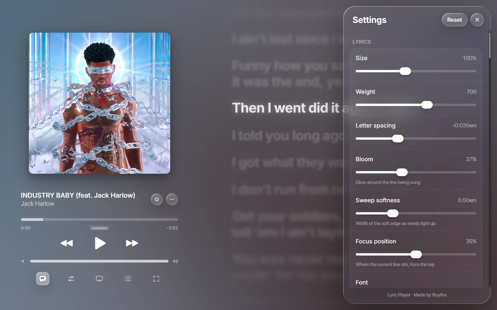
The Lyrics section of Settings.
Lyrics
Size, Weight, Letter spacing: the shape of the text.
Bloom: the glow around the line being sung.
Sweep softness: how soft the edge is as words light up.
Focus position: how far down the screen the current line sits.
Font and Colour: including a colour taken from the album cover.
Blur other lines, Zoom current line, Spring motion, Hide sung lines.
Serif font, Cover colour and more Bloom.
Background
Choose the background style, how fast it flows, how strongly it reacts to the bass and kick drum, and how dim it is. Still background and a lower Render quality save power on laptops.
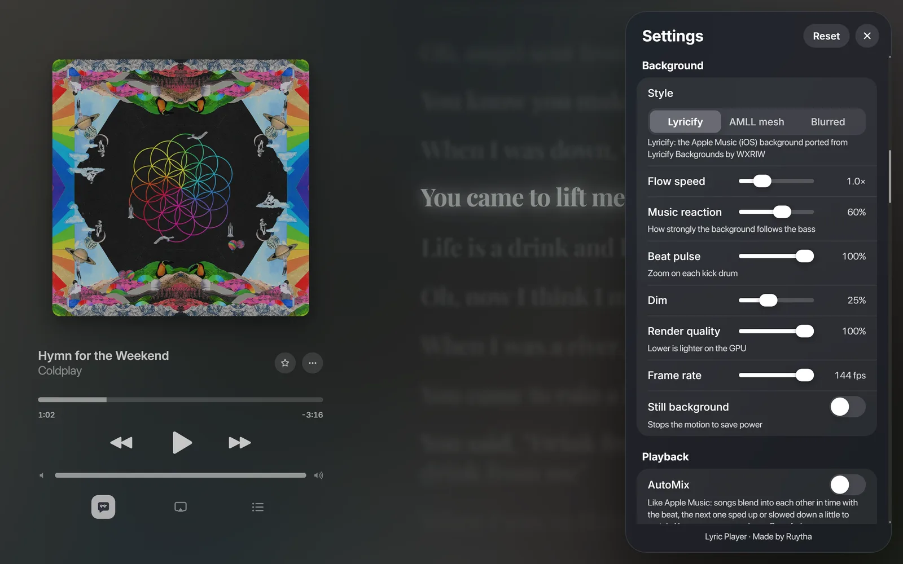
Settings › Background.The Lyricify background, the one Apple Music uses on iPhone.
Article
Lyric cards and clips
Share a few lines as an image, or a short video of the lyrics moving.
Lyric cards
Open ••• › Card, pick up to six lines and a style (Dark, Bright or Lyricify), then Save image or Copy.
The card previews as you pick lines.
Lyric clips
••• › Clip records a short video of the lyrics moving over the cover, as a 9:16 story, a square or a 16:9 video. It records in real time while the song plays.
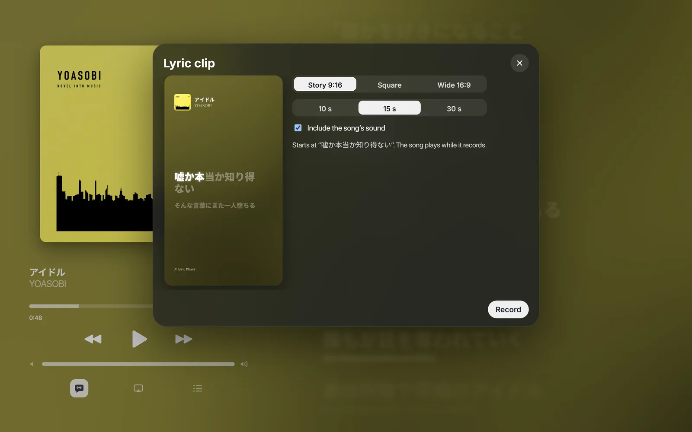
Pick a shape and a length; the clip starts at the current line.
Note
Clips include sound only for your own song files. Music followed from Spotify or Apple Music is never recorded.
Article
Discord and Last.fm
Show what you're playing on your Discord profile and scrobble to Last.fm.
Paste its Application ID into Settings › Discord and turn on Discord Rich Presence.
Choose the two lines of text using {title}, {artist} and {album}, and whether the cover is animated, still or hidden.
The Discord app must be open. Animated covers show as a looping GIF made by the Lyric Player website.
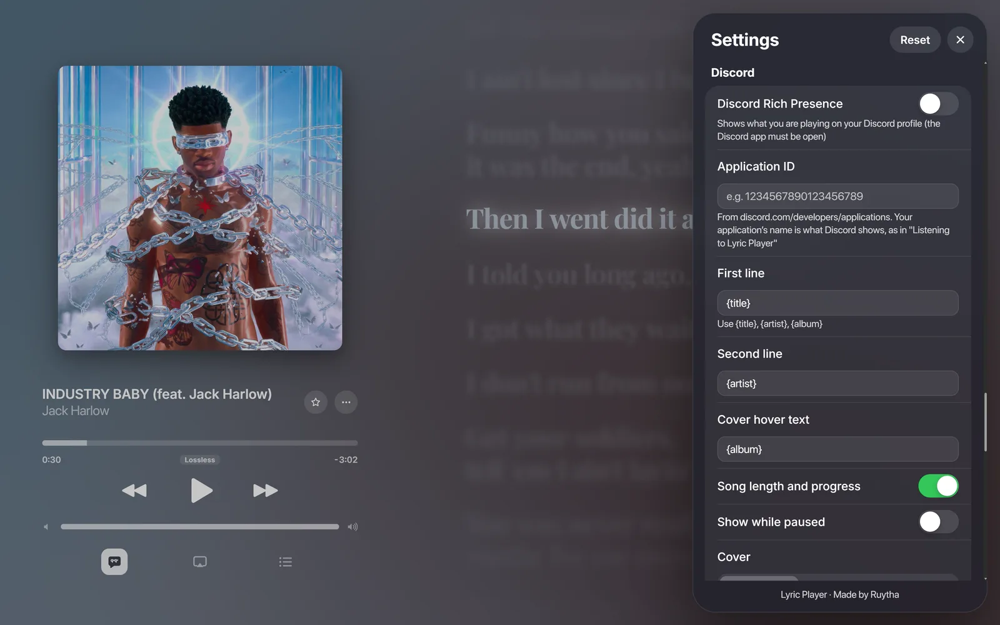
Settings › Discord.
Last.fm
Create an API account at last.fm/api, paste its API key and shared secret into Settings › Last.fm, connect your account and turn on Scrobble to Last.fm. Songs are added once you've heard half of them, or 4 minutes.
Article
Desktop extras
Floating lyrics, the mini player, the tray, the phone remote and the fun extras.
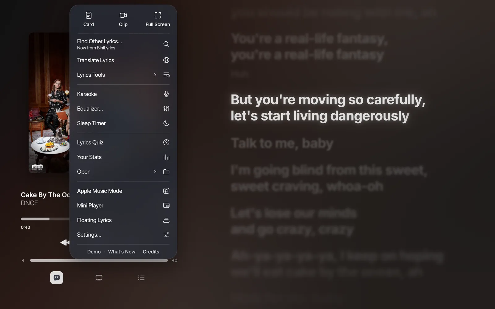
Most extras live in the ••• menu.
Floating lyrics and mini player
Floating lyrics (K, or CtrlAltL from anywhere) shows the current line in a bar that stays on top of other windows. The mini player (I) is a small window with the cover and the current line.
The tray
With Settings › App › Keep running in the tray on, closing the window leaves Lyric Player running by the clock, still following your music. Quit from its menu there. It can also open when you sign in, and start in the tray.
Phone remote
Turn on Settings › Phone remote and scan the QR code with your phone. The phone shows the cover and lyrics and controls the music, over your home Wi-Fi.
Just for fun
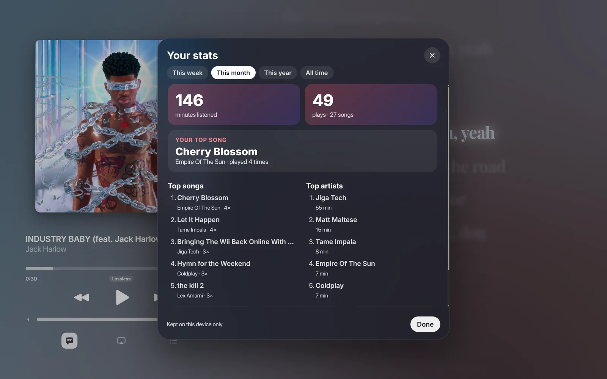
••• › Your Stats, kept on this device only.
Your stats: what you've listened to most.
Lyrics quiz: a word disappears from the next line; type it before the line is over.
Emoji reactions (Settings › Fun): emoji float up when words like love, fire or dance are sung. Add your own words as word=emoji.
Article
Troubleshooting
Fixes for the problems people run into, and how to report one.
A new version doesn't show up
Updates download in the background and are used from the next start. Quit Lyric Player completely (from the tray menu if it's there) and open it again. Settings › About shows the version and can use a downloaded update right away.
Apple Music lyrics don't load
Check that you're signed in under Settings › Apple Music and that your subscription is active. Some songs only have lyrics in some countries. When Apple Music has none, the next source is used.
Lyrics are early or late
Shift them with [ and ], or fix single lines with E. See Fixing lyric timing.
The background is slow or the laptop runs warm
Lower Settings › Background › Render quality or Frame rate, or turn on Still background.
Report a problem
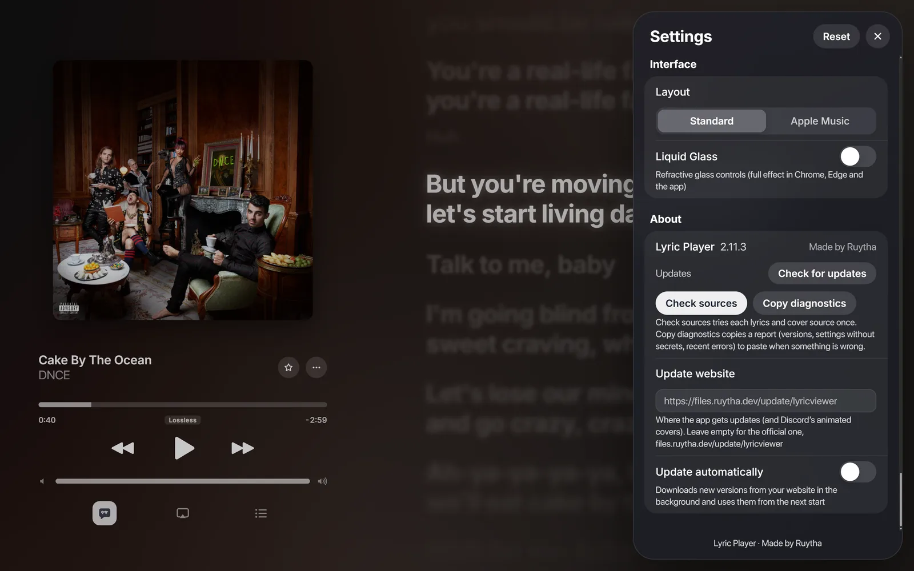
Settings › About.
Open Settings › About › Copy diagnostics. It copies a report with the versions, your settings (without passwords or keys) and recent errors, ready to paste into a message.